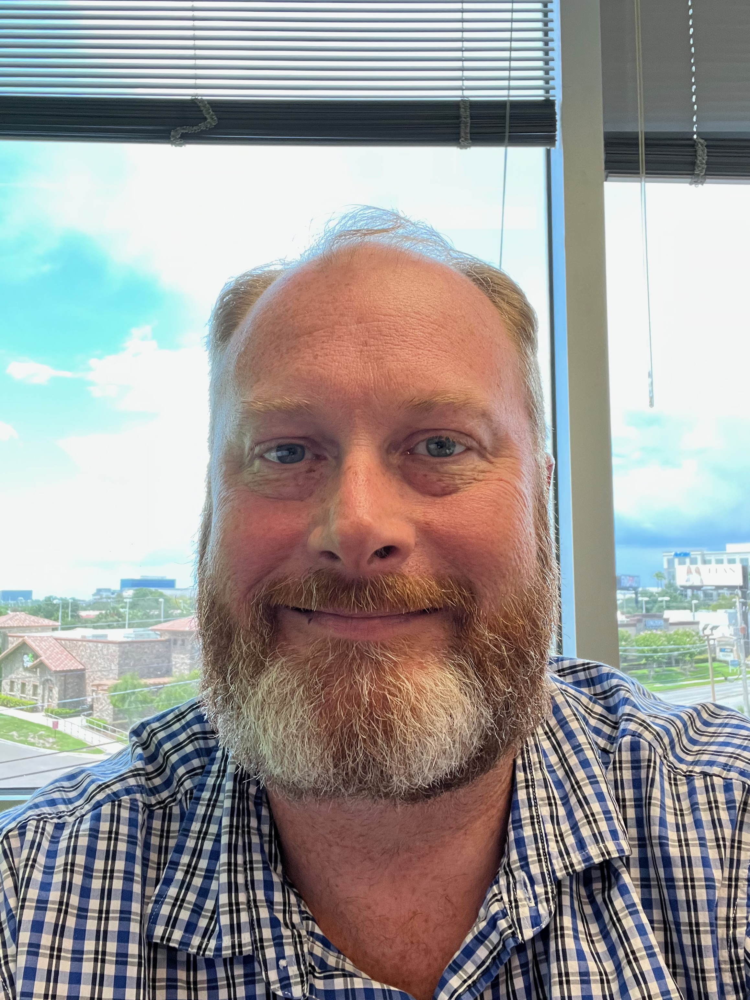

Meet the Founders
Veteran-owned and operated, bringing military-grade discipline and decades of enterprise experience to technology integration.

Paul Knoll
Founder & PrincipalPaul Knoll brings over 20 years of deep IT experience, bridging the gap between complex cloud infrastructure and intuitive, AI-driven automation. His career began in the U.S. Army Signal Corps, where he served for four years managing battalion-level PC repair and communications. This military foundation instilled a standard of discipline, meticulous planning, and reliable execution that he brings to every technology integration today.
His extensive enterprise career includes a 13-year tenure at ADT/CCI managing national server and storage lifecycles, and serving as Interim IT Lead at National Pool Partners where he directed critical infrastructure modernization across regional sites. At Wind Talker Innovations, Paul led Cloud State Unification, successfully codifying expansive AWS infrastructure using advanced Terraform state imports.
Specializing in Infrastructure as Code, Identity Fabric Architecture (SAML/SCIM/SSO), Cloud Security, and advanced AI automation, Paul has a proven track record of architecting zero-touch deployments and engineering localized, air-gapped AI environments.
Amanda Knoll
Co-Founder & Managing MemberAmanda Knoll serves as the Managing Member and Co-Founder of Redbeard Solutions. Drawing on over 20 years of dedicated customer service experience and her proud background as a U.S. Army veteran, Amanda brings a standard of excellence, discipline, and a client-first focus to the organization.
Her extensive background ensures that every Redbeard Solutions client receives unparalleled support, clear communication, and seamless project execution from start to finish. Together with Paul, Amanda guarantees that Redbeard's highly technical solutions are matched with world-class, dependable service.
In addition to her operational leadership, Amanda is a licensed Property & Casualty (P&C) Insurance Agent, holding active licenses in 14 states including Florida, Iowa, Illinois, Wisconsin, Nebraska, Georgia, Tennessee, Michigan, and Minnesota.